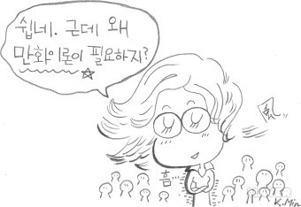
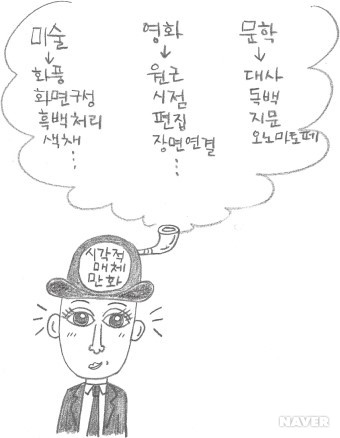
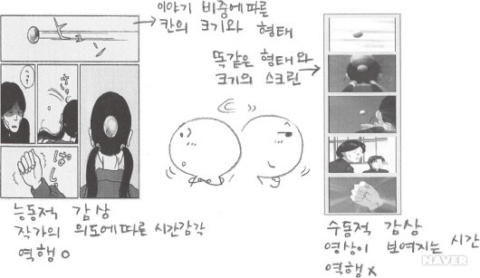

어느 분야의 개론서이든 그 첫 장은 ‘무엇인가’를 정의하는 것으로부터 출발하기 마련이다. 그럼 대체 ‘만화란 무엇인가?’
일상적으로 우리는 만화가 어떤 것이라는 것을 잘 알고 있다. 우리 가운데 누군가는 매일 만화에 열광하며 몰두하고 집착할 지도 모른다. 문제는 이렇게 익숙한 만화에 대해 우리가 얼마나 알고 있으며 어떻게 설명할 수 있느냐하는 것이다. 우리가 만화의 장점을 설명할 수 있고, 다른 장르와의 차이점을 주장할 수 있어야 비로소 만화는 그 존재 이유와 목적이 분명해진다.
일반적으로 우리는 만화를 스토리를 가지고 있는 연속적인 그림과 글의 조합이라고 정의한다. 정의는 단순하지만, 만화는 형식과 내용, 역할과 기능면에서 다양하게 표현될 수 있고, 다양한 예술적 표현수단, 즉 회화, 영화, 문학 등과 교차점을 가지기 때문에 만화를 한마디로 정의하는 것은 사실상 불가능하다.
만화가 감성적 기호인 그림과 개념적 기호인 글이 합쳐진 복합적 미디어라는 특성은 만화를 생각할 때 중요한 포인트가 된다. 만화의 그림은 화풍, 화면구성, 흑백의 처리, 색채 등을 시각예술에서 빌려왔으며, 원근, 시점, 편집, 장면 연결 등은 영화예술에서 그 형식을 차용하였다. 또한, 말풍선에 담긴 대사뿐만 아니라 인물 내면의 독백, 장면을 설명하는 지문, 움직임과 소리, 상황 등을 표현하는 의성어와 의태어 등은 만화가 문학과 교차점을 갖는다는 증거이다. 하지만 이러한 만화의 특성은 영화, 연극, 음악과 달리 시각이라는 감각을 전제로 한다.
그렇다면 ‘만화란 무엇인가’라는 문제를 보다 원론적으로 고찰하기위해 우리는 만화에 인접해있는 다양한 시각매체들과 비교해서 생각해 볼 수 있다. 예를 들어, 영화와 만화를 비교해 보면, 영화는 1초에 24프레임의 속도로 만들어진 영상이 똑같은 형태와 크기의 스크린에 등장한다. 등장하는 영상은 이어서 등장하는 다음 영상에게 자리를 내주면서 소멸되며, 스크린에 보이는 영상은 역행해서 이전의 영상으로 돌아가는 것을 결코 허용하지 않는다.
반면에, 만화에는 스크린에 필적하는 고정된 틀이 없다. 동일한 크기의 칸으로 이야기를 이끌어가는 경우도 있지만 스토리를 갖는 대부분의 만화는 이야기의 비중과 역할에 따라 칸의 크기와 형태가 제각각이며, 전후 칸과의 관계를 통해 이야기를 이끌어간다. 즉, 보이는 것을 수동적으로 받아들여야 하는 영화와 달리 만화는 독자가 능동적으로 조절하며 읽어나가야 한다. 또한, 정해진 시간을 통해 행위를 표현하는 영화와 달리 만화는 특정장면을 선택하여 행위를 대표할 수 있고 정해진 행위는 작가의 의도에 따라 만들어진 시간 감각을 가진다.
1947년 데츠카 오사무(手塚治虫)가 《신보물섬(新宝島)》에 영화적 기법을 도입했을 때만
해도 만화와 영화는 전혀 다른 매체였다. 《신보물섬》의 출현은 당시 열광적인 인기를 모았는데,
그림의 신선함, 스토리의 재미, 매력적인 등장인물 등이 그 이유였지만, 무엇보다도 독자를
사로잡았던 것은 마치 영화를 보는 듯 빠르게 전개되는 칸의 움직임이었다.
© 데츠카 오사무 《신보물섬》
위에 제시되는 《신보물섬》의 본문 페이지를 보면, 배가 멀어지는 움직임과 소년의 움직임이 부드럽게 연결되어 6개의 칸이 하나의 장면으로 보여 독자에게 빠른 리듬감을 주고있다.
요즘은 영화적으로 표현하는 만화들이 많고, 반대로 만화에서 소재를 찾거나 원작만화의 이미지를 그대로 영상으로 옮기는 영화들도 쉽게 찾아볼 수 있다. 이처럼 현대의 만화와 영화는 이미지의 결합으로 하나의 텍스트가 형성되어 있다는 점에서 그 경계선이 모호해졌다고 말할 수도 있지만 움직이는 이미지와 정지된 이미지를 표상하는 매체경로에 있어서는 큰 차이를 가진다.